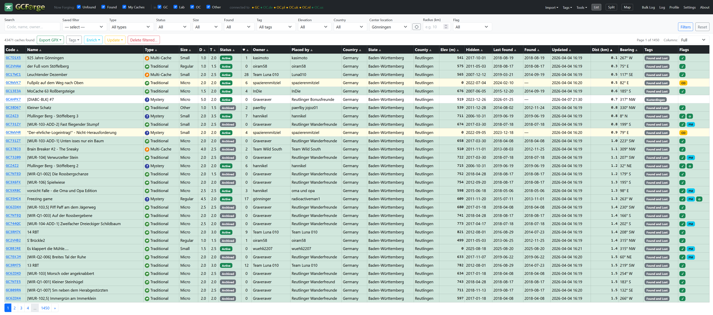
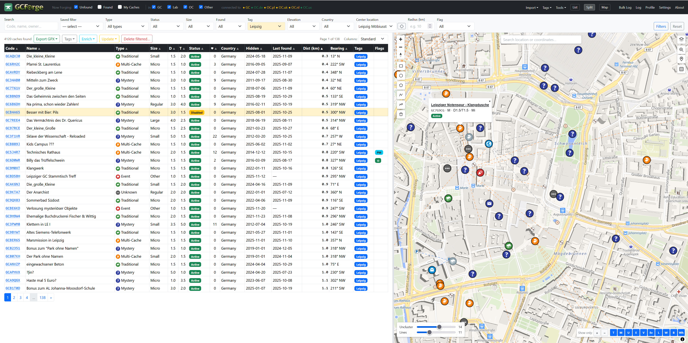
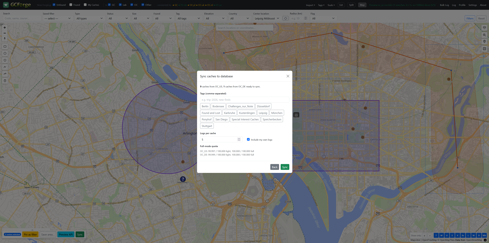
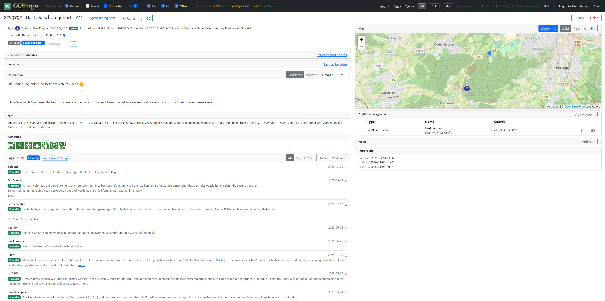
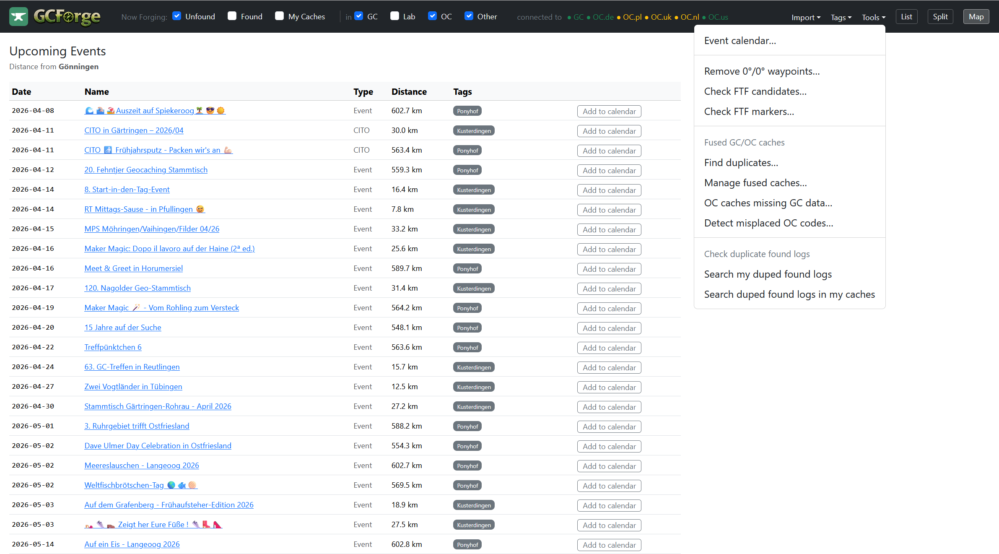
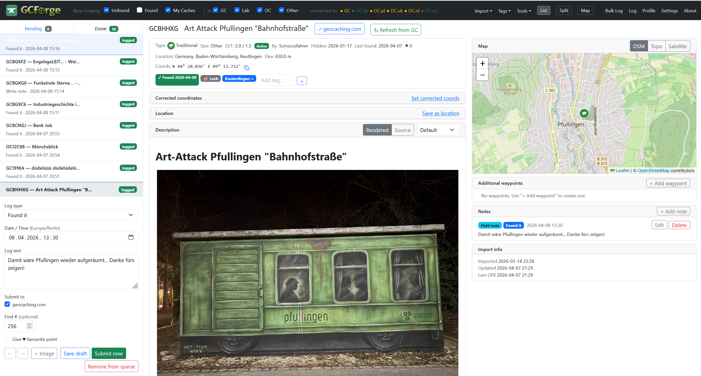

GCForge is the modern, open-source successor to GSAK. Import from GPX, GSAK databases, and Adventure Labs. Filter, tag, and manage your caches with ease.
BETA — not yet included: GPS device transfer, scripting, Geocaching.com API (Opencaching API is supported), and more.
Everything you need to manage your geocaching life in one place.
Import from GPX files, Pocket Queries, GSAK databases, and Adventure Lab exports. One unified database — no more juggling multiple files.
Many-to-many tags replace GSAK's separate databases. A cache can live in multiple collections simultaneously.
Visualize your caches on an interactive map. Draw search areas, filter by distance from your location, and plan your routes.
Filter by type, difficulty, terrain, size, status, attributes, distance, and custom tags. Save and reuse filter presets.
Direct import from GSAK SQLite databases. Preserves tags, corrected coordinates, logs, waypoints, and user notes.
Python-based scripting extensibility. Write custom filters (available!), automations, and integrations with your favorite tools.
A clean, focused interface designed for managing large cache collections.






Available for Windows, macOS, and Linux. Currently in beta — feedback and bug reports are welcome.
All downloads are from GitHub Releases.
Requires no Python installation — everything is bundled.
Get up and running quickly with our getting started guides.